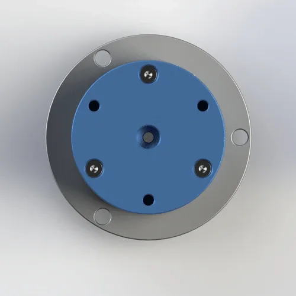
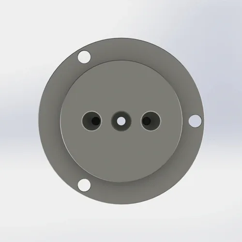

Triple-Kanal G1/8 Gewinde Drehdurchführung mit 4mm Öffnung für pneumatische und leichte Fluidanwendungen. PTFE Verbunddichtung, AL6061 Gehäuse. ?78,9 × 63.9 mm, 390 g. Versand innerhalb von 7 Tagen.
BP-3P-0007 ist ein Präzisions-Triple-Kanal G1/8 Gewinde Drehdurchführung mit 4mm Öffnung und Rillenkugellager-Unterstützung. Bestimmt für kompakte Automatisierungs- und Roboteranwendungen EOAT, bei denen ein geringes Leerlaufmoment und eine Leckageregelung wichtig sind. Jede Einheit wird vor dem Versand zu 100% Druck getestet.
| Modellnummer | BP-3P-0007 |
|---|---|
| Kanal | 3-in-3-out (Triple Kanal) |
| Öffnungsgröße | 4 mm |
| Gewindetyp | G1/8 (BSPP) |
| Rotorverbindung | 3-M5 (rotierende Seite) |
| Statoranschluss | 3-6 mm Durchgangsloch (feste Seite) |
| Einbauart | G1/8 Gewinde |
| Maximaldruck | 1 MPa (10 bar / 145 psi) - Drehzahl reduzieren zu 0.7 MPa für kontinuierliche Wasser- oder Kühlmittelsteuer |
| Maximale Geschwindigkeit | 200 RPM — Drehzahlverringerung zu 150 RPM für kontinuierliches Wasser oder Kühlmittel |
| Kompatible Medien | Luft, Wasser, wasserlöslicher Kühler, leichtes Hydrauliköl |
| Annahme von Leckagen | Nach Modell angegeben; Prüfkriterien vor der Bestellung bestätigen. |
| Gehäusematerial | AL6061 Aluminiumlegierung |
|---|---|
| Dichtungstyp | PTFE Verbunddichtung mit FKM O-Ring-Backup |
| Lagertyp | Rillenkugellager |
| Betriebstemperatur | -20°C nach +80°C |
| Nettogewicht | Ca. 0.39 kg (390 g) |
| Abmessungen | ?78,9 × 63.9 mm |
| Leerlaufdrehmoment | ≤ 2 N·m |
| Betriebslebensdauer | ≥ 8.000 Stunden (ausgelegte Bedingungen) |
|---|---|
| Bescheinigungen | ISO 9001:2015, CE, RoHS |
| Garantie | 12 Monate |
AL6061 Aluminiumgehäuse: 6061-T6 Aluminiumlegierung mit Streckgrenze 276 MPa und ausgezeichneter Korrosionsbeständigkeit bei Eloxierung. Die 0.39 kg-Masse und die ?78,9 × 63.9 mm-Hülle machen sie ideal für die Roboter-EOAT- und Desktop-Automatisierung, bei der jedes Gramm und jeder Millimeter wichtig ist. Die Anodisierungsdicke beträgt 15-25 Mikrometer für den Korrosionsschutz. Nicht empfohlen für abrasives Kühlmittel oder hochwirksame Umgebungen.
PTFE Verbunddichtung: Polytetrafluorethylen mit Glasfaser und Graphitfüllstoff. Selbstschmierend, chemisch inert und für -200°C bis +260°C ablegbar. Der Verbundwerkstoff behält eine geringe Reibung (0,05–0,10 gegenüber Stahl) bei und bietet gleichzeitig die Dichtigkeit, die für eine 100%ige Druckprüfung erforderlich ist. Der FKM O-Ring sorgt für eine statische Abdichtung an der Gehäuseschnittstelle.
Rillenkugellager: Bietet radiale und axiale Abstützung mit ≤ 2 N·m Leerlaufdrehmoment. Das Lager reduziert die Dichtungsseitenlast und verlängert die Dichtungslebensdauer von 6 Monaten auf 12+ Monate unter Ablagebedingungen. Inspizieren Lager jährlich für Spiel — ersetzen, wenn radiales Spiel 0.05 mm überschreitet. Das Lager ist vorgeschmiert und für das Leben unter normalen Einsatz abgedichtet.
BP-3P-0007 ist für kompakte, präzise Anwendungen konzipiert, bei denen G1/8-Gewinde, geringes Leerlaufmoment und eine kleine Umhüllung erforderlich sind. Die 4mm Öffnung ist für kleine Vakuumbecher und Präzisionsgreifer optimiert. Dieses Modell kann für die aufgeführten Anwendungen geeignet sein, wenn die Kanalzahl, die Montage, das Medium, der Druck, die Geschwindigkeit und die Temperaturgrenzen den Maschinenanforderungen entsprechen.
Die richtige Installation ist für BP-3P-0007 aufgrund seiner kompakten Größe und Präzisionslagerung von entscheidender Bedeutung. Die häufigste Ursache für frühzeitiges Versagen ist das Überziehen des G1/8-Gehäuses, das das AL6061-Gehäuse reißt, oder das Aufbringen von Seitenlasten, die das Rillenkugellager beschädigen. Befolgen Sie diese Schritte für einen zuverlässigen Betrieb.
BP-3P-0007 verwendet G1/8 BSP Parallel (BSPP) Gewinde nach ISO 228-1. Bestätigen Sie, dass Ihre Ausrüstung G1/8 weibliches Gewinde oder entsprechende Adapter hat. Die Rotorseite hat 3x M5-Montagelöcher; die Statorseite hat 3x 6 mm-Durchgangslöcher. Herunterladen Sie die 2D-Zeichnung für exakte Gewindeabmessungen, Tonhöhe (0.907 mm für G1/8) und Toleranzen. NPT und metrische Gewinde-Optionen sind als Kundenspezifisch-Bestellungen mit 10-tägiger Vorlaufzeit erhältlich.
Verwenden Sie PTFE-Band (3-4 Wicklungen) oder anaerobe flüssige Gewindedichtmittel auf dem G1/8 männlichen Gewinde. Handstraffung plus maximal 1/4 Drehung. Durch das Überziehen wird das AL6061-Gewinde rissig oder das Dichtungsgehäuse verzerrt, wodurch die PTFE-Dichtung ungleichmäßig zusammengedrückt wird. Spezifikation des Drehmoments: 8–12 N·m für G1/8. Verwenden Sie einen Drehmomentschlüssel - das 0.39 kg Aluminiumgehäuse ist weniger nachsichtig als Stahl. Verwenden Sie niemals Rohrschlüssel auf dieser kompakten Drehdurchführung.
Verwenden Sie die 3x M5-Montagelöcher auf der Rotorseite, um das Drehdurchführungsgehäuse an einer festen Halterung zu befestigen. Drehmoment M5 bis 3–5 N·m. Lassen Sie das Gehäuse niemals frei mit der Welle rotieren - die Versorgungsschläuche werden sich verdrehen und die Dichtung erfährt ein umgekehrtes Drehmoment, das den Verschleiß beschleunigt. Die Verdrehsicherungshalterung darf keine Seitenlast auf das Gehäuse aufbringen - Seitenlasten > 5 N beschädigen das Rillenkugellager und erhöhen das Leerlaufmoment.
Verwenden Sie flexible Schläuche (nicht starres Rohr), um die stationäre Seite zu verbinden. Starre Rohre übertragen Vibrationen und thermische Ausdehnung direkt auf die Drehdurchführung und belasten die Dichtung und das Lager. Installieren Sie einen 40-Mikrometer-Filter stromaufwärts, um die PTFE Dichtung vor Trümmern zu schützen. Für Wasser oder Kühlmittel fügen Sie einen Y-Strainer (60 Mesh) hinzu, um Partikelschäden zu vermeiden. Die 4mm Öffnung schränkt Durchfluss ein – vergewissern Sie sich, dass die Durchflussanforderung Ihrer Anwendung bei 0.6 MPa <50 L/min ist.
Laufen Sie bei niedrigem Druck (0.2 MPa) und niedriger Geschwindigkeit (50–100 RPM) für 5 Minuten ohne Last. Dieser bettet die PTFE Dichtung gegen die Schaftoberfläche und verteilt Fett im Rillenkugellager. Überprüfen Sie alle drei Dichtung-Schnittstellen auf Lecks. Achten Sie auf Lagergeräusche - ein reibungsloser Betrieb zeigt eine ordnungsgemäße Installation an. Wenn trocken und leise, allmählich zu Betriebsdruck und Geschwindigkeit über 10 Minuten zu erhöhen. Überspringen des Run-in ist die # 2 Ursache für frühe Dichtung und Lagerversagen.
Vollabmessungen, Toleranzen, G1/8 Gewinde technische Daten, 4mm Öffnungsdetails, 3-M5-Rotormontagemuster, 6 mm Statordurchgangslöcher, Lager technische Daten und Dichtungsnutdetails. 120 KB.
Kostenlose 3D-Dateien nach Anfrage zur Verfügung gestellt. Enthält genaue G1/8-Geometrie, 4mm-Öffnungspfade, 3-M5-Montagemuster und Rillenkugellagerhülle. Verwenden Sie CAD-Einbauprüfung vor der Bestellung.
Vollständiger Leitfaden: Gewindeabgleich, drehmomenttechnische Daten, Verdrehsicherung, Lagerschutz, Filtration, Einlaufverfahren und Wartungscheckliste. 650 KB.
AL6061 Materialrückverfolgbarkeit, Härteprüfbericht, Lagerspezifikation und RoHS-Konformitätszertifikat. Verfügbar auf Anfrage mit Bestellung.
Sie sind sich nicht sicher, ob BP-3P-0007 das richtige Modell ist? Verwenden Sie diesen Vergleich, um zu entscheiden - und wissen Sie genau, wann Sie zu einer größeren Öffnung, einer Flanschmontage oder einem Hochdruckgelenk aufrüsten müssen.
| Ihre Anforderung | BP-3P-0007 Fit | Bessere Alternative | Warum Aufrüstung |
|---|---|---|---|
| Einzelluftleitung, Handwerkzeug, gewichtskritisch | ❌ Overkill — 0.39 kg, 3 Kanäle | BP-1P-0003 | 0.08 kg Aluminium, Einkanal, niedrigere Kosten |
| Dual Air Lines, 1 MPa, allgemeine Automatisierung | ⚠️ Weniger Kanäle benötigt | BP-2P-0002 | gleich G1/8 Gewinde, 1.5 MPa, Zweikanal |
| Dreifachlinien, G1/8 Gewinde, kompakt, 4mm Öffnung | ✅ Perfekt | — | — |
| Dreifachlinien, G1/4 größeres Gewinde, 6mm Öffnung | ❌ falsche Größe | BP-3P-0006 | G1/4 Gewinde, 6mm Öffnung, ?64 × 78 mm für höheren Durchfluss |
| Dreifache Linien, Flanschmontage bevorzugt | ❌ Falsche Halterung | BP-3P-0004 | Gleiche 3 Kanäle, Flanschmontage, bessere Schwingungsbeständigkeit |
| Druck > 1.0 MPa (z. B. 1.5 MPa hydraulisch) | ❌ Überdruck | BP-2P-130-0001 | 5 MPa ausgelegt, Flanschmontage, Heavy Duty |
| 4+ unabhängige Kanäle benötigt | ❌ Zu wenige Kanäle | BP-8P-0001 | 8 Kanäle mit unabhängigen Dichtungen, Flanschmontage |
Die # 1 Ursache von BP-3P-0007 Garantieansprüchen ist übertrieben. Ein Techniker wendet 15 N · m auf ein G1/8-Gewinde ausgelegt für 8-12 N · m an. Der AL6061 Gewinde-Riss, wodurch ein Leckpfad entsteht, der nicht repariert werden kann. Das kompakte 0.39 kg-Gehäuse hat weniger Material als größere Gelenke, wodurch es weniger auf Überdrehungen verzichtet. Regel: Verwenden Sie einen Drehmomentschlüssel. Handstraffung plus maximal 1/4 Drehung. G1/8: 8–12 N·m. Verwenden Sie niemals Pfeifenschlüssel. Wenn das Gewinde bei richtigem Drehmoment undicht ist, ersetzen Sie die PTFE-Band - ziehen Sie sie nicht weiter an.
Ein Maschinenbauer versucht, einen großen Vakuumbecher (80 mm Durchmesser) durch BP-3P-0007 4mm Öffnung laufen zu lassen. Die Öffnung beschränkt Durchfluss auf 30 L/min bei 0.6 MPa, aber der Becher benötigt 60 L/min. Die Vakuumpumpe läuft kontinuierlich, überhitzt die PTFE Dichtung und verursacht einen vorzeitigen Ausfall. Der Erbauer gibt der Drehdurchführung die Schuld - aber die Ursache ist falsche Durchflussauslegung. Regel: Stellen Sie sicher, dass Ihre Durchflussanforderung < 50 L / min pro Kanal bei 0.6 MPa ist. Für einen höheren Durchfluss verwenden Sie BP-3P-0006 (6mm Öffnung) oder BP-3P-0004 (Flanschmontage mit größeren Kanälen). Die 10 US-Dollar Ersparnis bei einer kleineren Drehdurchführung kostet 45 US-Dollar an Dichtungsersatz.
Ein Roboterintegrator montiert BP-3P-0007 an einer EOAT-Halterung, die 10 N Seitenlast während der Beschleunigung aufbringt. Das Rillenkugellager ist für radiale Belastungen unter 5 N ausgelegt. Innerhalb von 3 Monaten entwickelt das Lager ein Spiel > 0.05 mm, wodurch das Leerlaufmoment von 2 N·m auf 5 N·m erhöht wird. Der Servomotor überhitzt und die Positioniergenauigkeit verschlechtert sich. Regel: Befestigen Sie die Drehdurchführung, so dass das Gehäuse nur axiale Belastungen erfährt. Verwenden Sie eine flexible Schlauchschlaufe, um Seitenkräfte zu isolieren. Die Verdrehsicherungshalterung darf das Gehäuse nicht schieben oder ziehen – sie soll nur ein Drehen verhindern.
Andere Drehdurchführungen, die üblicherweise mit BP-3P-0007 gekauft wurden - oder die Modelle, zu denen Sie Aufrüstung benötigen, wenn Ihre Anwendung einen höheren Durchfluss, eine höhere Flanschmontage oder mehr Kanäle benötigt.
Der Standard BP-3P-0007 verwendet ein vollständiges AL6061 Aluminiumgehäuse mit Rillenkugellager-Unterstützung für geringes Leerlaufdrehmoment und reibungslose Rotation. Druck- und Dichtheitsprüfungen werden nach Modellen angegeben. Bestätigen Sie vor der Bestellung den jeweiligen Prüfdruck, die Dauer und die Annahmekriterien mit Begapunk. Für Vollstahlkonstruktionen oder spezielle Lagerspezifikationen wenden Sie sich bitte an unser Konstruktionsteam. Alle Versionen werden unter ISO 9001:2015 Qualitätsmanagement hergestellt und tragen CE- und RoHS-Zertifizierungen. Materialzertifikate mit vollständiger Rückverfolgbarkeit sind bei jeder Bestellung auf Anfrage erhältlich.
Ja — die PTFE-Verbunddichtung und der FKM-O-Ring sind mit Wasser, wasserlöslichem Kühlmittel und leichtem Hydrauliköl kompatibel. Für den kontinuierlichen Wassereinsatz reduziert die Drehzahl den Druck auf 0.7 MPa und die Geschwindigkeit auf 150 RPM, um den Dichtungsverschleiß zu reduzieren. Das AL6061 Gehäuse ist auf Korrosionsbeständigkeit anodisiert und eignet sich somit für intermittierende Wasser- und Kühlmitteleinwirkung. Das Rillenkugellager ist jedoch nicht gegen Wassereintritt abgedichtet - für den Dauerwassereinsatz geben Sie eine abgedichtete Lageroption an oder verwenden Sie BP-3P-0004 (Flanschmontage) mit externem Lagerschutz. Verwenden Sie immer einen 40-Mikron-Filter für die Wasserpflicht.
BP-3P-0007 verwendet G1/8 BSP Parallel (BSPP) Gewinde nach ISO 228-1 mit 0.907 mm Pitch. BSP parallele Gewindedichtung auf einer Dichtung oder O-Ring an der Anschlussseite, nicht auf dem Gewinde selbst. Dies bedeutet, dass das PTFE-Band auf dem Gewinde nur zur Abdichtung dient; Die mechanische Verbindung wird durch die flache Fläche hergestellt, die sich gegen den Gegenanschluss zusammendrückt. Herunterladen Sie die 2D-PDF-Zeichnung für genaue Gewindeabmessungen, Tonhöhe und Toleranzen. NPT und metrische Gewinde-Optionen sind als Kundenspezifisch-Bestellungen mit 10-tägiger Vorlaufzeit erhältlich. Die Rotorseite verwendet 3-M5-Montagelöcher und die Statorseite verwendet 3-6 mm-Durchgangslöcher.
Ja - kostenlose 3D STEP- und IGES-Dateien werden bereitgestellt, nachdem Sie eine Anfrage gesendet haben. Die Datei enthält genaue G1/8-Geometrie, 4mm Öffnungspfade, 3-M5-Rotormontagemuster, 6 mm-Statordurchgangslöcher, Rillenkugellagerhülle und das 0.39 kg AL6061 Gehäuse. Verwenden Sie die 3D-Datei, um die Freigabe, die Anschlussrichtung, die Länge des Gewindeeingriffs und den Lagerzugriff in Ihrer CAD-Baugruppe vor der Bestellung zu überprüfen. 3D-Dateien können für qualifizierte Projekte bereitgestellt werden, nachdem die Anwendungsanforderungen überprüft wurden. Dateiverfügbarkeit und Antwortzeit hängen vom Modell und den bereitgestellten Projektinformationen ab. kundenspezifisch Konfigurationen werden auf Wunsch modelliert.
Aufrüstung, wenn Ihre Anwendung die 1 MPa-Druckgrenze, die 200 RPM-Geschwindigkeitsgrenze, die 4mm-Durchflusskapazität überschreitet oder einen anderen Montagestil benötigt. Common Auslöser: (1) Ihr Druckbedarf steigt über 1.0 MPa hinaus – BP-2P-130-0001 handhabt 5 MPa mit Flanschmontage. (2) Sie benötigen einen höheren Durchfluss, als die 4mm Öffnung zulässt - BP-3P-0006 bietet 6mm Öffnung mit G1/4 Gewinde. (3) Sie benötigen Flanschmontage für eine bessere Vibrationsbeständigkeit - BP-3P-0004 bietet die gleich 3 Kanäle mit Flansch-Montage. (4) Sie benötigen 4 oder mehr Kanäle - BP-8P-0001 bietet 8 Kanäle. Die Aufrüstung Kosten ist in der Regel $ 15- $ 90 mehr, aber es verhindert Dichtung Versagen von Überdruck oder Fließ Hunger.
Wir entwerfen kundenspezifische Drehdurchführungen für eine beliebige Anzahl von Kanälen, Druck, Gewinde-Typ und Montagestil. Kostenlose 3D STEP-Datei mit jeder Anfrage. Typische Kundenspezifisch-Vorlaufzeit: 10-14 Tage.
Sonderausführung anfragen →Technische Anmerkung: Alle Druckangaben, Drehzahlangaben und Materialspezifikationen, auf die auf dieser Seite verwiesen wird, basieren auf Begapunk BP-Baureihe Standard pneumatische Drehdurchführungen, die unter kontrollierten Laborbedingungen getestet wurden. Die tatsächliche Leistung hängt von den Betriebsbedingungen, der Medienqualität, den Installationspraktiken und dem Wartungsplan ab. Für Anwendungen außerhalb von Standardgrenzwerten — einschließlich Hochdruckhydraulik oberhalb von 1 MPa, kontinuierlicher Wassertauchung, lebensmittelgeeigneter oder Reinraumumgebungen — konsultieren Sie die Begapunk Konstruktionsabteilung vor der Spezifikation. Zuletzt aktualisiert: 11. Juni 2026.